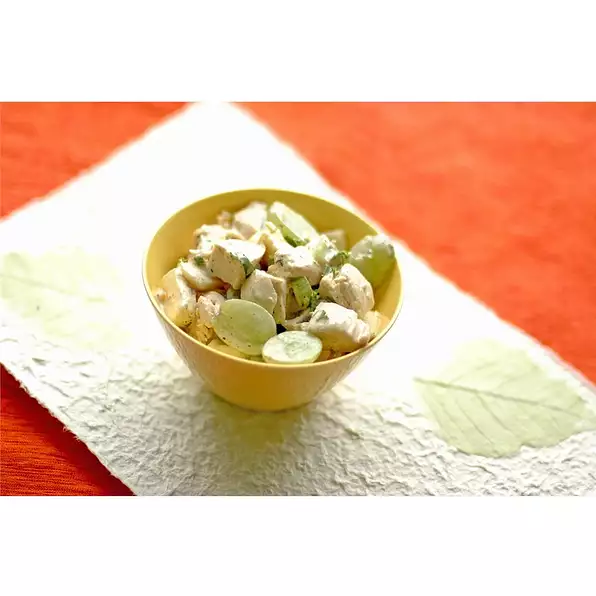

Odin's Chicken Salad

Description
In Canada and the United States, "chicken salad" refers to either any salad with chicken, or a specific mixed salad consisting primarily of chopped chicken meat and a binder, such as mayonnaise, salad dressing or cream cheese.
Though it appeared a couple years earlier in a German cookbook, for a “Mayonnaise de poulet” which is FRENCH for “Chicken in Mayonnaise”) So Chicken's already being tossed in Mayonnaise, AND being made into Salad at the same time. The typical European way of "sorting things out" back then, as well!
Ingredients
- ½ cup mayonnaise
- ½ teaspoon salt
- ¾ teaspoon poultry seasoning
- ¼ teaspoon onion powder
- ¼ teaspoon garlic powder
- ¼ teaspoon ground black pepper
- 1 tablespoon lemon juice
- 3 cups diced, cooked chicken breast meat
- ½ cup finely chopped celery
- 1 ½ cups diced Swiss cheese
Directions
- Step 1
In a medium bowl, whisk together the mayonnaise, salt, poultry seasoning, onion powder, garlic powder, pepper, and lemon juice.
- Step 2
In a large bowl, toss together the chicken, celery, green onions, water chestnuts, Swiss cheese, and grapes. Add the mayonnaise mixture, and stir to coat. Chill until serving.